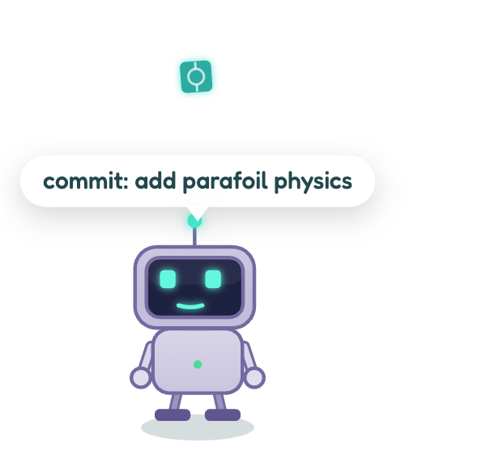

Real-Time Git Activity
ZERO-CONFIG REFLOG WATCHER
Bitling automatically scans your home directory and tails your repositories' .git/logs reflog. No tokens, no GitHub account required, and no polling.

- Git commit: Drops a glowing node stamped with the short hash that your pet eats.
- Git push: Launches a multi-stage rocket ascending into the clouds.
- Git merge: Confetti explosion and celebratory merge feast.